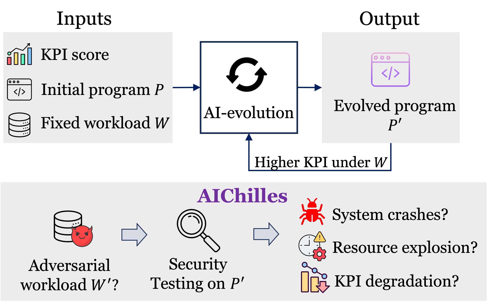
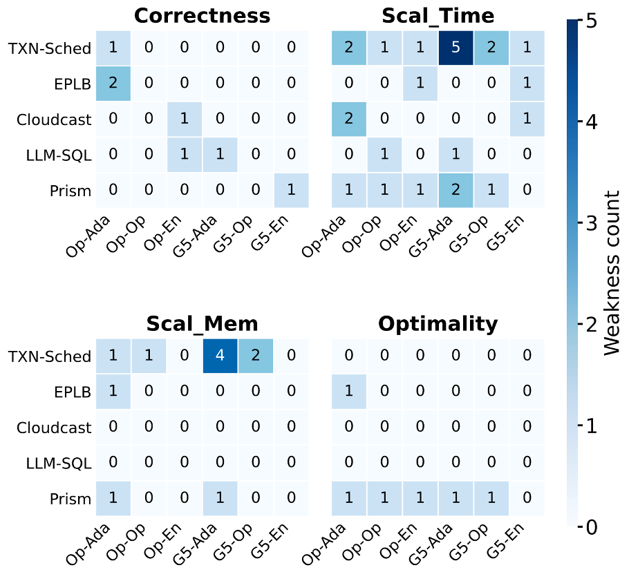

GhostCheck Risk Discovery
Automatically uncovering hidden weaknesses in AI-evolved systems.
AI-evolved programs can hide dangerous failures
Automated discovery systems evolve a program P into a faster P′ that scores well
on a fixed workload W. But P′ may hide failures that only surface on workloads no
one tested. GhostCheck searches for an adversarial workload W′ that makes P′
crash, blow up in time or memory, or quietly degrade solution quality.

A three-agent, coverage-guided pipeline
GhostCheck explores the input space like a fuzzer, but uses code coverage as a novelty signal and an LLM as the mutator — chasing genuinely new behaviors instead of random noise. Confirmed weaknesses are clustered by root cause and explained.

Four weakness types, checked every oracle call
P′ crashes, times out, or returns a wrong / invalid result.
P′ is dramatically slower as the workload scales.
P′ uses dramatically more memory as the workload scales.
P′ runs fine but produces a measurably worse solution.
Weaknesses found across 5 systems × 6 evolved programs
Each cell counts discovered weaknesses for one system and one evolved program (3 frameworks — AdaEvolve, OpenEvolve, Engram — × 2 LLMs, Claude-Opus-4.6 & GPT-5), broken out by weakness type.

Side-by-side P vs P′ source with the weakness lines highlighted, the triggering workload, and P-vs-P′ regression curves.
Why it finds what fuzzers miss
sys.settrace coverage as the novelty signal and an LLM as the mutator — chasing unseen code paths.evaluator.py and writes a generate_workload() sampler — no hand-written fuzz harness.